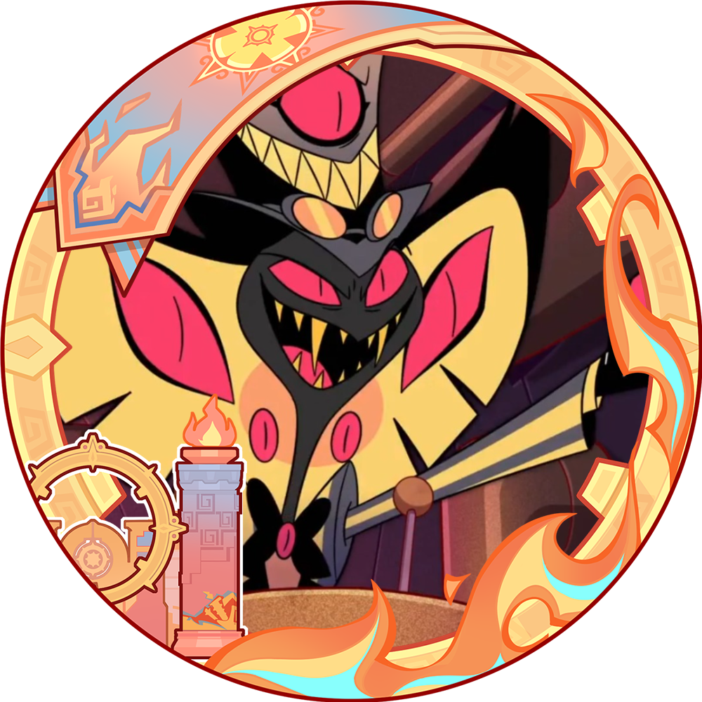

Sobre Nosotros

David Romero
Apasionado por descubrir nuevos destinos y capturar momentos únicos, David es el encargado de diseñar rutas originales para nuestros clientes. Siempre está buscando experiencias locales auténticas y lugares fuera del radar.
👉 Especialidad: planificación de viajes culturales y fotografía de viajes.

Daniel García
Explorador de alma y mente estratégica, Daniel lidera la parte tecnológica y de logística de la agencia. Su objetivo es que cada viaje esté perfectamente coordinado, sin sorpresas ni contratiempos.
👉 Especialidad: organización de viajes personalizados y viajes de aventura.